Префектура Окинава · город Окинава · праздники
Фестиваль эйса всего острова: три дня барабанов и танцев в городе Окинава
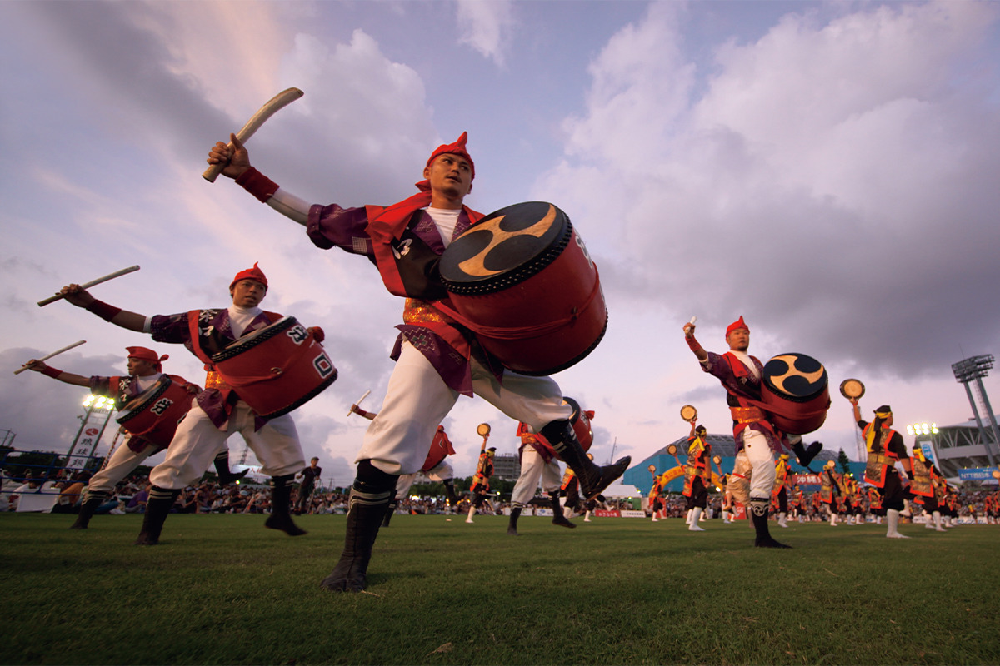
Каждый год после старого праздника Бон в город Окинава съезжаются лучшие команды эйсы со всего острова. Три дня барабанов, сансина и танцев собирают около 300 000 зрителей, и к финалу танцуют уже все.
Праздник
Самая большая эйса префектуры
Эйса это традиционный окинавский танец: глухой, тяжёлый ритм барабанов, лёгкая мелодия сансина и размашистые, сильные движения. Сегодня её знают по всей Японии, но родина эйсы находится в центральной части острова Окинава. Именно здесь, в городе Окинава (до 1974 года он назывался Кодза), проходит фестиваль эйса всего острова Окинава, крупнейшее событие такого рода в префектуре.
На фестиваль приезжают команды, отобранные в разных районах острова, и гости из городов-побратимов по всей Японии. Каждая показывает свою эйсу, и разница между ними хорошо видна: у каждой местности свои песни, костюмы и манера танца.
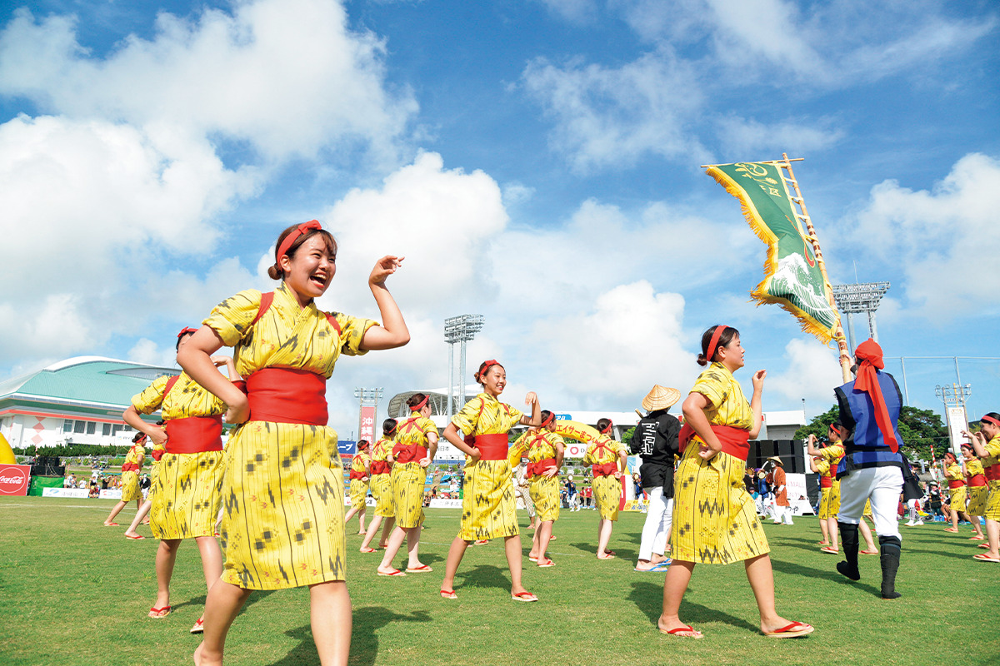
История
От танца для предков к большой сцене
Эйсу считают окинавским вариантом нэмбуцу-одори, буддийских поминальных плясок, которые на основных островах Японии танцуют на праздник Бон. Такие пляски упоминаются в записи о Нахе 1479 года в летописях корейской династии Ли, и, вероятно, эйса появилась примерно тогда же. Откуда взялось само слово, точно не знают. Одни выводят его из «Оморо соси», древнего собрания рюкюских песен, другие из припева «эйса, эйса».
На праздник Бон, по поверьям, домой возвращаются не только души предков, о которых заботятся потомки, но и неприкаянные души, у которых никого нет. Их тоже угощали рисовыми лепёшками и сакэ. Со временем этот обычай превратился в обход деревни: молодые люди с песнями и танцами шли от дома к дому, утешая духов.
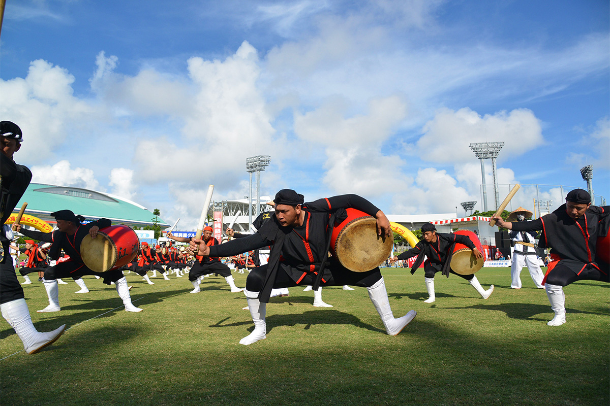
Классическая эйса состоит из нескольких частей. Впереди несут хатагасира, высокое знамя команды. За ним идут танцоры с барабанами и танцоры без барабанов, рядом с ними тёндара, шут с набелённым лицом, а песни исполняют музыканты дзиката. Барабаны бывают трёх видов: большой одайко, плоский симэдайко и маленький ручной паранку. На севере острова больше танцуют без барабанов, в центральной части барабан главный. Каждая местность старается сохранить свой стиль и учит ему молодёжь.
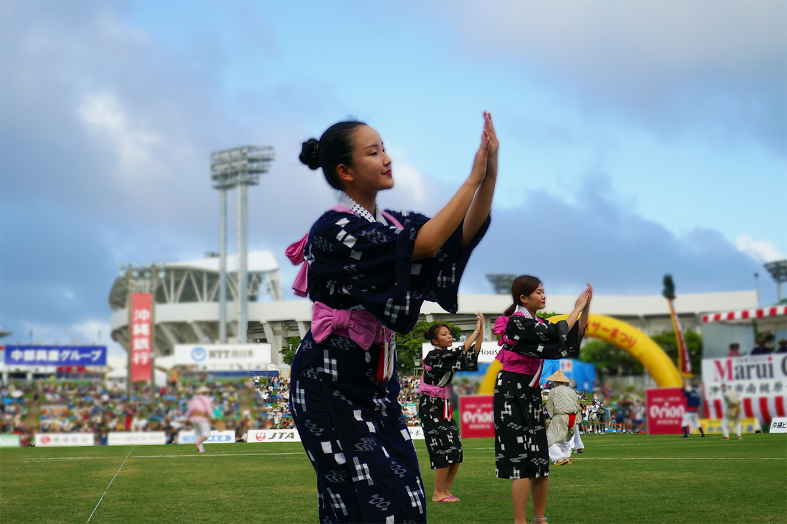
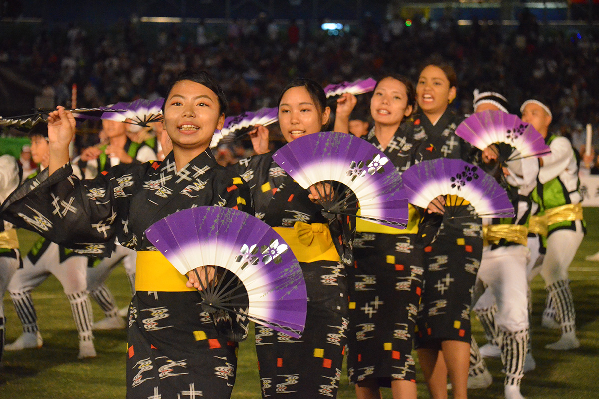
Обычно эйсу танцуют на старый праздник Бон: после уукуи, проводов душ предков, молодёжь выходит петь и танцевать на площадях и улицах деревень. Фестиваль всего острова начался в 1956 году, когда Окинава ещё находилась под управлением США. В тот год появился город Кодза, и местная торгово-промышленная палата устроила конкурс эйсы. Судьи оценивали построение, технику и костюмы, но расставлять по местам такие разные танцы оказалось трудно. С 1977 года оценки отменили, и конкурс стал общим праздником, где команды просто показывают друг другу свою эйсу.
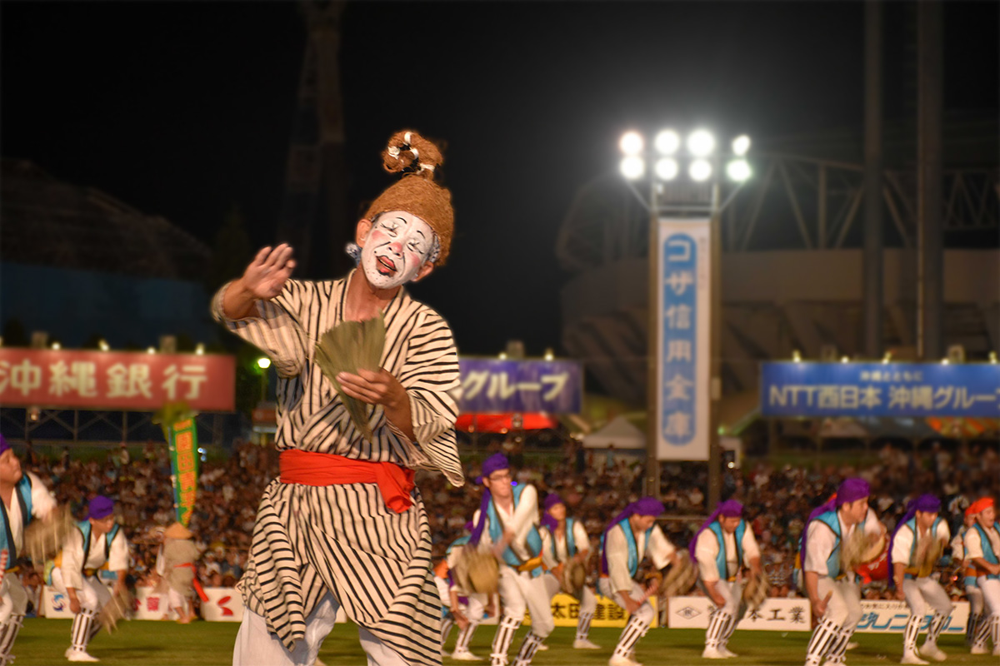
Что смотреть
Три дня в Кодза
Фестиваль проходит на выходных после старого праздника Бон, с пятницы по воскресенье, в конце августа или начале сентября. В 2025 году он прошёл 12–14 сентября, на 2026 год были назначены 4–6 сентября.
В первый день по улицам у перекрёстка Гоя идёт мити-дзюнэ, шествие команд по городу. Это эйса в её исконном виде, как её танцуют в деревнях, и у неё свой подъём, не такой, как на стадионе: танец сливается с жизнью улицы. Смотреть его стоит не спеша, вместе с ностальгическими улицами города Окинава.
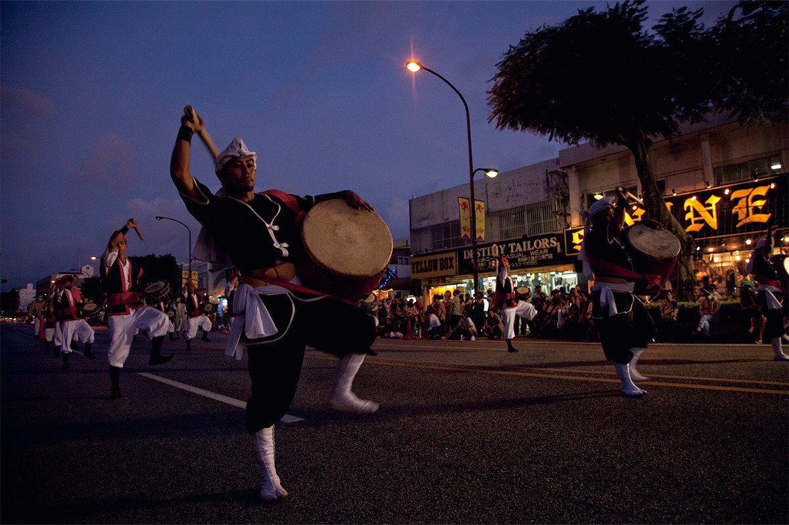
В субботу и воскресенье главная сцена переезжает на стадион спортивного парка Кодза. Здесь выступают команды со всего острова, гости из других префектур и создатели новой, авторской эйсы. Когда на поле одновременно выходят десятки команд, зрелище впечатляет. За три дня фестиваль собирает в общей сложности около 300 000 человек: жителей Окинавы, гостей из других префектур и из-за рубежа.
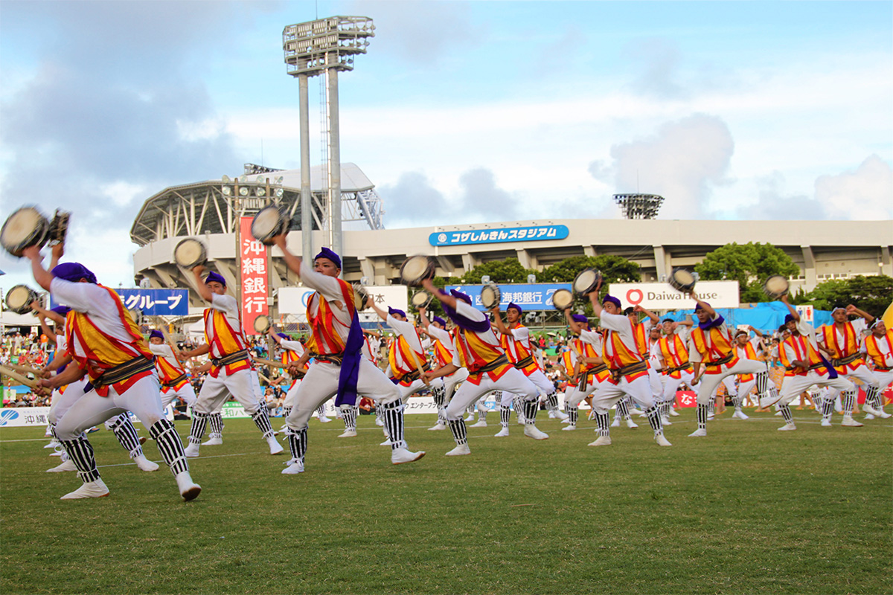
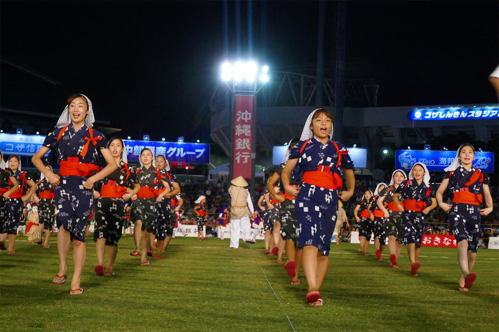
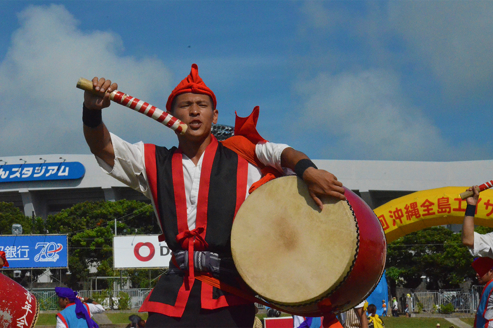
Некоторые зрители начинают повторять движения прямо на трибунах, а танцоры, закончив выступление, подходят к ним, показывают шаги и танцуют вместе. В финале весь стадион пускается в катяси, свободный окинавский танец, где пляшут и исполнители, и зрители. После этого запускают фейерверк и устраивают лазерное шоу. Одновременно с фестивалем проходит пивной праздник, и там тоже шумно и весело.
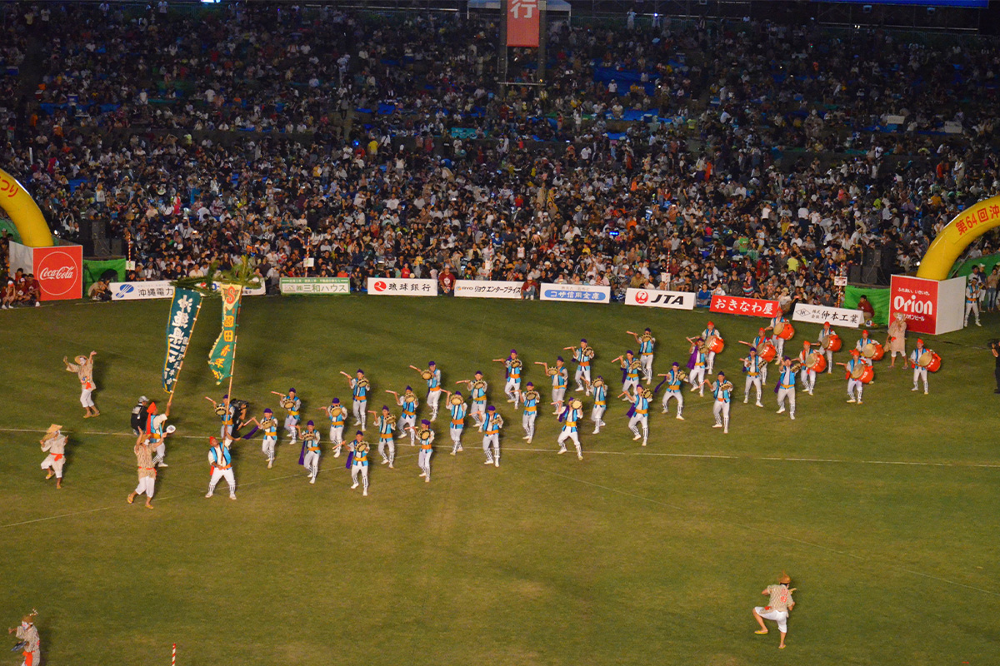
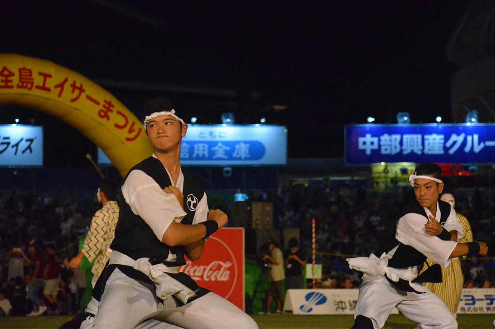
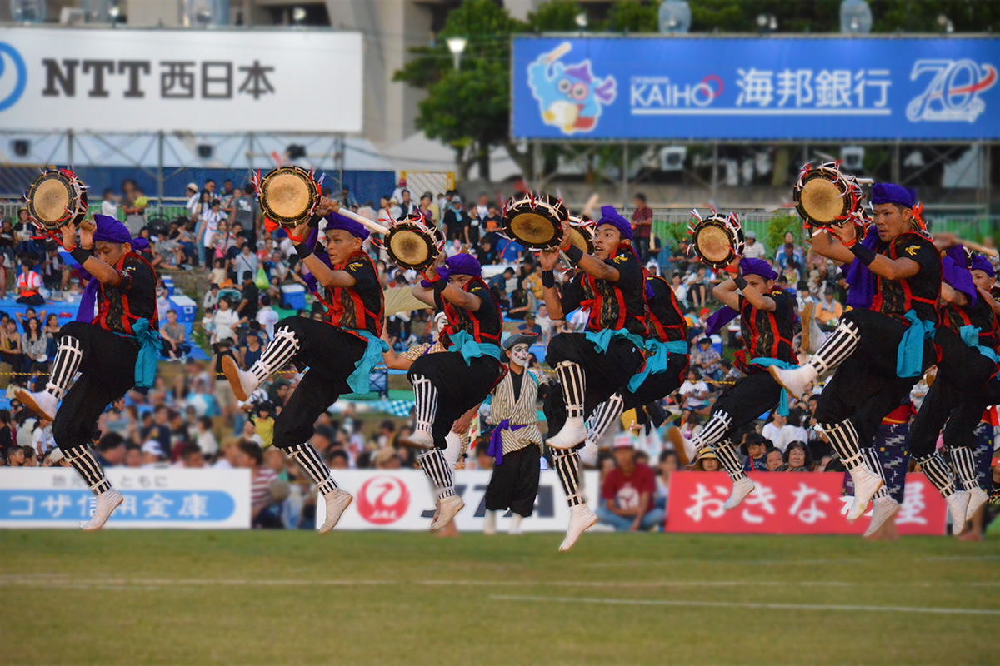
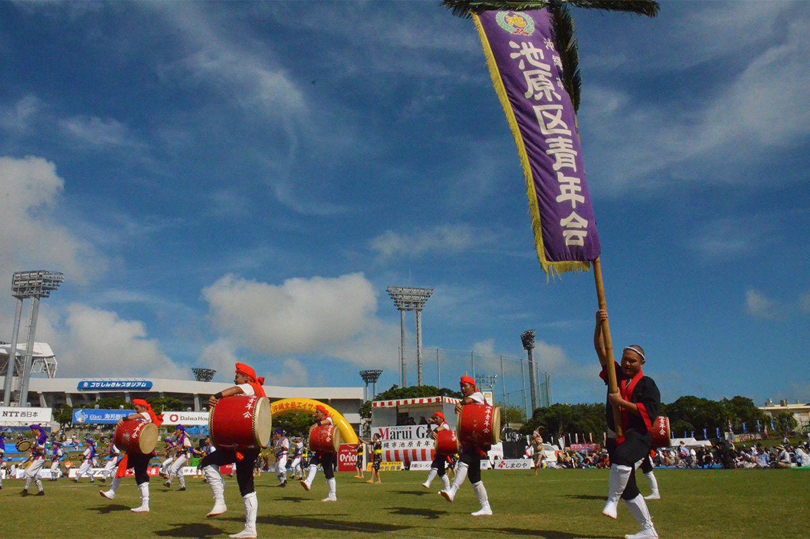
Фестиваль эйса всего острова Окинава
- Даты
- выходные после старого праздника Бон (пятница–воскресенье), конец августа или начало сентября; в 2026 году 4–6 сентября. При тайфуне переносят на следующую неделю
- Адрес
- префектура Окинава, город Окинава, Моромидзато, 2-1-1, спортивный парк Кодза (пятница: район перекрёстка Гоя; суббота и воскресенье: стадион парка)
- Телефон
- +81 98-937-3986
- Как добраться
- от остановки Ryukyu Bus «Окинава-си ундо коэн-маэ» около 6 минут пешком; от остановки скоростного автобуса Naha Bus «Окинава-минами IC» около 5 минут пешком; на машине около 1 минуты от съезда Окинава-минами скоростной дороги Окинава
- Сайт
- zentoeisa.com
Фото: OCVB, Исполнительный комитет фестиваля эйса всего острова Окинава.